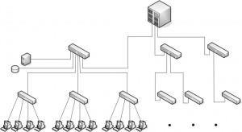

Un switch es un dispositivo de interconexión utilizado para conectar equipos en red formando lo que se conoce como una LAN.
Un switch conecta dispositivos en red. Un switch NO proporciona por si solo conectividad con otras redes y tampoco proporciona conectividad con Internet.
Funciones:
Un equipo de la red habilita la compartición de archivos y el resto de equipos pueden acceder a dichos archivos a través de la red.
Todos los equipos de la red pueden utilizar la misma impresora.
Todos los equipos pueden acceder a Internet a través de router de acceso, que está conectado en la red. Aunque para eso es necesario un router, los router implementan un switch para hacer esta labor.
La variedad que existen de switchs en el mercado en tan amplia que podemos encontrar switchs por 10€ o incluso hasta por más de 10.000€, con esto nos podemos hacer una idea de la amplia variedad que existe en este mercado.
Son los que están en el núcleo central de las grandes redes
Son los que están en un nivel inferior, en cuanto a jerarquía, en la red local y suelen ser los que están conectados a los equipos de los usuarios.
Ofrece unas características extras las cuales hacen que el precio del mismo se incremente y también estas requieren una configuración extra
Son todo lo contrario, no cuestan tanto como los gestionables, pero tienen características básicas.
Ahora que tenemos estos conceptos claros podemos proceder a explicar los tipos de switchs que existen.

Es el más básico de todos sin duda, su uso se da en casas y en pequeñas empresas. No se pueden montar en un rack debido a sus dimensiones, no necesitan configuración.
Se utilizan para crear redes de pequeño tamaño de prestaciones medias. No admiten opciones de configuración y suelen tener características similares a los switchs de escritorio, pero incrementando el número de puertos y ofreciendo la posibilidad de montaje en rack.

Se utiliza para la conexión de los equipos de los usuarios en redes de tamaño medio y grande, y se localizan en el nivel jerárquico inferior. Es necesario que estos switchs ofrezcan características avanzadas de configuración y gestión.

Están diseñados para formar el núcleo de una red de tamaño medio. Proporcionan altas prestaciones y funcionalidades avanzadas.

La principal característica de este tipo es su alta modularidad. Se utilizan en grandes redes corporativas o de campus.
La función básica que realiza un switch se conoce como conmutación y consiste en trasferir
datos entre los diferentes dispositivos de la red. Para ello usan las cabeceras de las tramas
Ethernet.
Guardan en una tabla las direcciones MAC de todos los dispositivos conectados junto con el
puerto en el que están conectados, de forma que cuando llega una trama al switch, dicha
trama se envía al puerto correspondiente.
Vídeo explicativo
Son zonas de memoria donde las tramas son almacenadas antes de ser reenviadas al puerto
correspondiente. Esta característica permite al switch conectar puertos que trabajen a
diferentes velocidades.
Los buffers pueden ser implementados en la salida de los puertos, en la entrada de los puertos
o una combinación de ambos. Lo más habitual es implementarlos en la salida.
Los buffers se implementan en memorias RAM integradas en la circuitería del dispositivo.